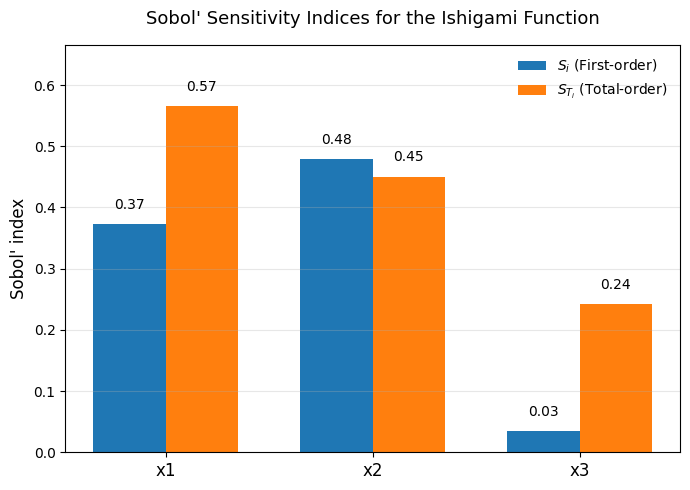

Variance-based sensitivity analysis was formalized by Ilya M. Sobol’, a Russian mathematician, in 1990.
Sobol’ was working on uncertainty propagation in complex computational models, where small changes in inputs could lead to large, nonlinear changes in outputs.
His key insight was that a model’s output variance can be decomposed into contributions from each input variable and their interactions.
This approach built upon earlier ideas in ANOVA (Analysis of Variance) and factorial design, but extended them to arbitrary nonlinear, non-additive models.
Sobol’s work provided a rigorous, model-independent way to measure how much of the uncertainty in the model output can be attributed to uncertainty in each input.
Today, the Sobol’ method (often misspelled “Sobel”) is a cornerstone of global sensitivity analysis (GSA) — used across hydrology, climatology, ecology, and environmental modeling.
Conceptual Overview
Consider a model:
\[
Y = f(X_1, X_2, \ldots, X_k)
\]
where each \(X_i\) is an uncertain input variable with a known probability distribution,
and \(Y\) is the scalar model output (e.g., recharge rate, runoff, or suitability index).
or equivalently: \[
S_{T_i} = S_i + \sum_{j \ne i} S_{ij} + \sum_{j \ne i, k \ne i,j} S_{ijk} + \cdots
\]
This measures all effects involving \(X_i\), including its interactions.
In short:
\(S_i\) → how important a variable is on its own
\(S_{T_i}\) → how important a variable is in total (including interactions)
The sum of all first-order indices equals 1 only for purely additive models; otherwise, the difference \(1 - \sum_i S_i\) quantifies total interaction strength.
Why Sobol’ Analysis Matters in Ecohydrology
In ecohydrological models, relationships are rarely linear — infiltration, evapotranspiration, and recharge often depend multiplicatively on multiple factors (soil, vegetation, slope, climate).
Sobol’ analysis helps to:
Rank inputs by how much they drive uncertainty in outputs.
Assess model structure — whether the model is dominated by a few key variables or by complex nonlinear couplings.
Guide data collection — focus effort on the variables with high Sobol’ indices.
For example, in a groundwater recharge model, you might find that precipitation variability explains 60% of the variance in predicted recharge, but its total index is 0.9 — meaning interactions (with soil or vegetation) amplify its role.
Relationship to Morris
Feature
Morris Method
Sobol’ Method
Type
Qualitative / Screening
Quantitative / Global
Metric
Mean \(\mu^*\) and std \(\sigma\) of elementary effects
Variance decomposition
Sampling
Trajectory-based (few hundred runs)
Monte Carlo or quasi–Monte Carlo (thousands of runs)
Output
Relative importance, nonlinearity indication
Fraction of total variance explained
Strength
Low-cost first-pass screening
Precise quantification of global sensitivity
Sobol’ is typically applied after Morris identifies which inputs merit deeper investigation.
Next Steps
In the next sections, we will:
Build intuition using simple synthetic functions (e.g., the Ishigami function).
Compute Sobol’ indices from first principles (step-by-step variance decomposition).
Compare results with SALib implementations for verification.
Visualize the indices and interpret them in the context of ecohydrological or spatial decision models.
Step 1: The Ishigami Function — Building Intuition
The Ishigami function is a well-known test case in sensitivity analysis because it includes both strong nonlinear effects and interactions between variables.
It is defined as:
\[
f(x_1, x_2, x_3) = \sin(x_1) + a \sin^2(x_2) + b x_3^4 \sin(x_1)
\]
Typical parameter values are \(a = 7\) and \(b = 0.1\).
Each \(x_i\) is drawn uniformly from \([-π, π]\).
Key properties
\(x_1\) affects \(Y\) nonlinearly through \(\sin(x_1)\).
\(x_2\) affects \(Y\) only through \(\sin^2(x_2)\).
\(x_3\) interacts only with \(x_1\) (via \(b x_3^4 \sin(x_1)\)).
Thus, \(x_3\) has no main effect but a strong interaction effect.
The known analytical Sobol’ indices (for \(a = 7, b = 0.1\)) are:
Parameter
\(S_i\) (First-order)
\(S_{T_i}\) (Total-order)
\(x_1\)
0.314
0.558
\(x_2\)
0.442
0.442
\(x_3\)
0.000
0.244
You can see that: - \(x_2\) drives much of the output variance directly. - \(x_3\) matters only through its interaction with \(x_1\). - The gap between \(S_i\) and \(S_{T_i}\) indicates interaction strength.
# Step 1: Define and explore the Ishigami functionimport numpy as npimport pandas as pdimport matplotlib.pyplot as plt# Define Ishigami functiondef ishigami(x1, x2, x3, a=7, b=0.1):return np.sin(x1) + a * np.sin(x2)**2+ b * x3**4* np.sin(x1)# Sample inputsN =5000x1 = np.random.uniform(-np.pi, np.pi, N)x2 = np.random.uniform(-np.pi, np.pi, N)x3 = np.random.uniform(-np.pi, np.pi, N)# Compute model outputy = ishigami(x1, x2, x3)# Quick summarypd.DataFrame({"mean": [y.mean()],"variance": [y.var()],"min": [y.min()],"max": [y.max()]})
mean
variance
min
max
0
3.432564
13.580454
-10.022532
17.060055
Step 1.1: Visualizing the Ishigami Function
The Ishigami function lives in a three-dimensional input space (\(x_1, x_2, x_3 \in [-\pi, \pi]\)),
so we often visualize it using 2D slices.
Below, we: - Fix \(x_3 = 0\) to examine the main nonlinear contributions from \(x_1\) and \(x_2\). - Then show 1D cross-sections for each variable to highlight how \(f(x)\) responds when others are fixed.
These visualizations help reveal: - Strong nonlinearity in \(x_1\) and \(x_2\), - Interactions introduced by \(x_3\).
Step 2: Estimating Sobol’ Indices from Monte Carlo Samples
Sobol’ sensitivity analysis is based on decomposing the variance of the model output
\[
Y = f(X_1, X_2, \ldots, X_k)
\]
into contributions from each input and their interactions.
We will estimate: - the first-order index\(S_i\), which measures how much of the output variance can be explained by input \(X_i\) alone; - and the total-order index\(S_{T_i}\), which measures how much of the output variance is associated with \(X_i\), including all its interactions.
We will do this using Monte Carlo sampling and a standard Sobol’ estimator based on two sample matrices.
Core idea
Draw two independent random matrices \(A\) and \(B\), each of shape \((N, k)\).
Each row is one random draw of all inputs.
For each input \(X_i\), build a hybrid matrix \(A_B^{(i)}\) by:
taking all columns from \(A\) except column \(i\), which we take from \(B\).
So \(A_B^{(i)}\) is “mostly A, but with \(X_i\) from \(B\).”
Evaluate the model \(f\) on:
all rows of \(A\) → call that \(f(A)\)
all rows of \(B\) → call that \(f(B)\)
all rows of each \(A_B^{(i)}\) → call that \(f(A_B^{(i)})\)
Intuition: this measures how much the output would vary if we were to randomize \(X_i\) while holding all other inputs fixed. High \(S_{T_i}\) means \(X_i\) matters either directly or through interactions.
In this step, we will:
generate A and B,
build the hybrid matrices,
compute \(S_i\) and \(S_{T_i}\) for the Ishigami function.
import numpy as npimport pandas as pd# We'll reuse ishigami() from earlierdef ishigami(x1, x2, x3, a=7, b=0.1):return np.sin(x1) + a * np.sin(x2)**2+ b * x3**4* np.sin(x1)# 1. sampling setupdef sample_inputs(N):# each Xi ~ Uniform[-pi, pi]return np.random.uniform(-np.pi, np.pi, size=(N, 3))# 2. helper to evaluate f row-wisedef eval_model(X):# X is shape (N,3) with columns [x1, x2, x3]return ishigami(X[:,0], X[:,1], X[:,2])# 3. build A, B and hybrid matrices A_B^(i)def sobol_indices_ishigami(N=10000, seed=0): rng = np.random.default_rng(seed)# Draw two independent input matrices A and B A = rng.uniform(-np.pi, np.pi, size=(N, 3)) B = rng.uniform(-np.pi, np.pi, size=(N, 3))# Evaluate model at A and B fA = eval_model(A) fB = eval_model(B)# Variance of the output (denominator for normalization) VY = np.var(fA, ddof=1)# estimate mean(fA) and mean(fB) - we mostly use mean(fA) fA_mean = np.mean(fA) S_first = [] S_total = []for i inrange(3): # for each input x1, x2, x3# Construct A_B^(i): all columns from A except column i from B A_Bi = A.copy() A_Bi[:, i] = B[:, i] fABi = eval_model(A_Bi)# First-order index estimator (Sobol 1993-style / Saltelli 2002 variant)# S_i = [ E( f(B) * f(A_Bi) ) - (E f(A))^2 ] / Var(f(A)) numerator_first = np.mean(fB * fABi) - (fA_mean **2) S_i = numerator_first / VY# Total-order index estimator# S_Ti = E[ (f(A) - f(A_Bi))^2 ] / (2 Var(f(A))) numerator_total = np.mean((fA - fABi)**2) /2.0 S_Ti = numerator_total / VY S_first.append(S_i) S_total.append(S_Ti)# Pack into a DataFrame for readability df = pd.DataFrame({"S_first": S_first,"S_total": S_total }, index=["x1", "x2", "x3"])return df, VY, fA_meansobol_df, varY_est, meanY_est = sobol_indices_ishigami(N=10000, seed=123)sobol_df, varY_est, meanY_est
\(S_i\) (first-order index) measures how much of the total variance in the model output can be explained by that variable alone, holding all others constant.
\(S_{T_i}\) (total-order index) measures how much of the variance is due to that variable, including its interactions with others.
From the table:
\(x_1\) shows a strong direct effect (\(S_1 = 0.37\)) and a moderate interaction (\(S_{T_1} - S_1 \approx 0.19\)).
→ It influences \(Y\) both directly and through its interaction with \(x_3\).
\(x_2\) has the largest first-order effect (\(S_2 = 0.48\)) and nearly identical total-order value.
→ This means \(x_2\) acts independently—it explains much of the variance by itself, with little interaction.
\(x_3\) has a small first-order effect but a large interaction component (\(S_{T_3} - S_3 \approx 0.21\)).
→ It matters primarily through its interaction with \(x_1\) in the term \(b x_3^4 \sin(x_1)\).
Summary
The Ishigami function confirms that:
\(x_2\) is the dominant independent variable.
\(x_1\) has both main and interactive effects.
\(x_3\) is purely interactive, affecting \(Y\) only through coupling with \(x_1\).
The small differences between analytical and simulated results arise from sampling error in Monte Carlo estimation.
Next, we’ll visualize these results using a side-by-side bar plot to clearly compare \(S_i\) and \(S_{T_i}\) for each variable.
# Step 2.2: Visualizing first-order and total-order Sobol' indicesfig, ax = plt.subplots(figsize=(7,5))# set bar width and x positionsbar_width =0.35x = np.arange(len(sobol_df.index))# bars for S_first and S_totalax.bar(x - bar_width/2, sobol_df["S_first"], width=bar_width, label=r"$S_i$ (First-order)", color="#1f77b4")ax.bar(x + bar_width/2, sobol_df["S_total"], width=bar_width, label=r"$S_{T_i}$ (Total-order)", color="#ff7f0e")# axis and title formattingax.set_xticks(x)ax.set_xticklabels(sobol_df.index, fontsize=12)ax.set_ylabel("Sobol' index", fontsize=12)ax.set_title("Sobol' Sensitivity Indices for the Ishigami Function", fontsize=13, pad=15)ax.legend(frameon=False)# Add text labels above barsfor i inrange(len(x)): ax.text(x[i] - bar_width/2, sobol_df["S_first"].iloc[i] +0.02, f"{sobol_df['S_first'].iloc[i]:.2f}", ha='center', va='bottom', fontsize=10, color='black') ax.text(x[i] + bar_width/2, sobol_df["S_total"].iloc[i] +0.02, f"{sobol_df['S_total'].iloc[i]:.2f}", ha='center', va='bottom', fontsize=10, color='black')ax.set_ylim(0, max(sobol_df["S_total"].max(), sobol_df["S_first"].max()) +0.1)ax.grid(axis='y', alpha=0.3)plt.tight_layout()plt.show()

Step 2.2 Interpretation
In the bar plot below:
The blue bars (\(S_i\)) represent how much variance each input explains on its own (main effects).
The orange bars (\(S_{T_i}\)) show how much variance each input contributes including interactions.
From the Ishigami function:
\(x_2\) dominates the variance as an independent factor.
\(x_1\) has a strong main effect but also interacts with \(x_3\).
\(x_3\) barely contributes on its own but has a notable interaction effect—this is classic Ishigami behavior.
When \(S_{T_i} - S_i\) is large, it signals non-additivity or interaction in the model’s response surface.
Step 3: How Monte Carlo Sampling is Used in Sobol’ Sensitivity Analysis
Monte Carlo (MC) sampling is the engine that powers Sobol’s method.
Sobol’ indices are variance-based, which means they quantify how much of the variance in a model’s output is due to uncertainty (or variability) in each of its inputs.
But to estimate those variances and covariances, we need many realizations of the model.
That’s where Monte Carlo sampling comes in.
3.1 What We’re Sampling in General
In the Sobol’ framework, we treat each model input as a random variable with a specified distribution. For a model:
\[
Y = f(X_1, X_2, \ldots, X_k)
\]
we define a joint input distribution:
\[
(X_1, X_2, \ldots, X_k) \sim p(X)
\]
Monte Carlo sampling simply means: - drawing many random combinations of inputs from \(p(X)\), - running the model \(f\) for each sample, - and then analyzing how changes in each \(X_i\) influence the distribution of \(Y\).
From these samples, we can estimate: - the total output variance \(Var(Y)\), - and how much of that variance is attributable to each input or combination of inputs.
3.2 What That Means for MCDA
In multi-criteria decision analysis (MCDA), our “model” often looks like this:
\[
S = \sum_{i=1}^{k} w_i \, x_i
\]
where: - \(x_i\) are normalized criterion layers (e.g., slope, soil permeability, land cover suitability), - \(w_i\) are weights representing the relative importance of each criterion, - and \(S\) is the resulting suitability score (often a raster).
So the MCDA suitability map is a deterministic function:
\[
S = f(w_1, w_2, \ldots, w_k)
\]
where the “inputs” are the weights.
3.3 Using Monte Carlo Sampling for MCDA
In this context, we use Monte Carlo sampling to represent uncertainty in the weights.
Each Monte Carlo sample corresponds to one possible weighting configuration.
Typically, we assume the weights follow a Dirichlet distribution, since it ensures they are:
non-negative, and
sum to 1.
So for each sample \(w^{(n)} = [w_1^{(n)}, \ldots, w_k^{(n)}] \sim Dir(\alpha)\),
we compute a suitability map (or its mean, variance, or other summary), giving us an output \(S^{(n)}\).
By repeating this process many times, we build up a Monte Carlo estimate of:
\[
Var(S)
\]
and can compute Sobol’ indices that tell us: - which criteria (and which combinations of criteria) most affect the variability of the suitability score.
3.4 In Summary
Concept
In Classical Sobol’ (e.g., Ishigami)
In GIS/MCDA Context
Inputs (\(X_i\))
Continuous variables (model factors)
Weights or parameters (\(w_i\))
Sampling
Uniform on defined ranges
Dirichlet (weights sum to 1) or uniform
Output (\(Y\))
Model result (scalar or array)
Suitability score (map or region mean)
Purpose
Quantify how each factor affects variance
Quantify how each criterion weight affects suitability uncertainty
3.5 Intuition
In MCDA, Sobol’ sensitivity analysis tells you which weights really matter — and which could vary without changing the results much.
The first-order Sobol’ indices show which single criteria dominate the suitability pattern.
The total-order indices show where there are interactions (e.g., when two layers together produce strong or unexpected outcomes).
Thus, the Monte Carlo samples are not “random pixels” — they are random decision models, each representing one plausible set of preferences (weight vectors).
In short: in Sobol’ analysis of MCDA, we use Monte Carlo sampling to explore uncertainty in the decision weights — typically by drawing thousands of plausible weight combinations from a Dirichlet distribution — and then measure how those differences propagate through to the final suitability results.